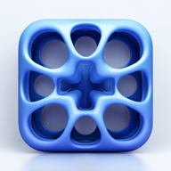
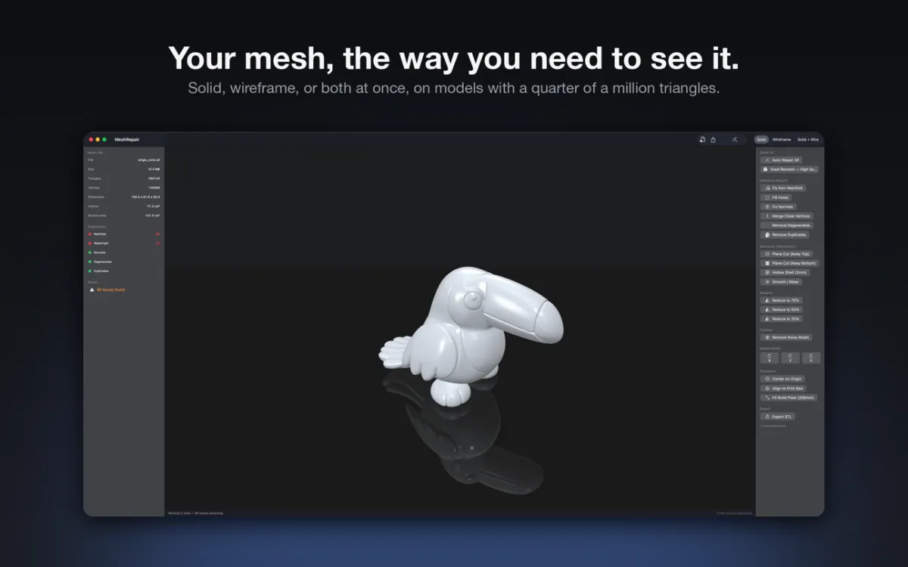
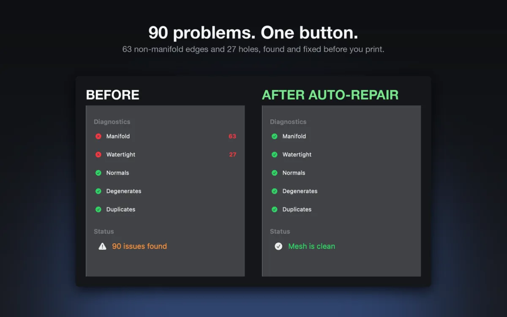
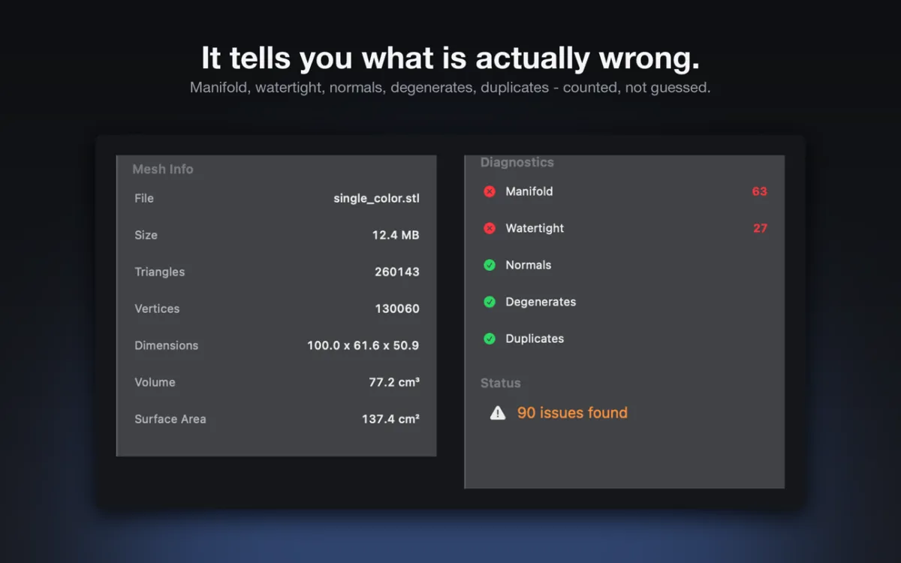
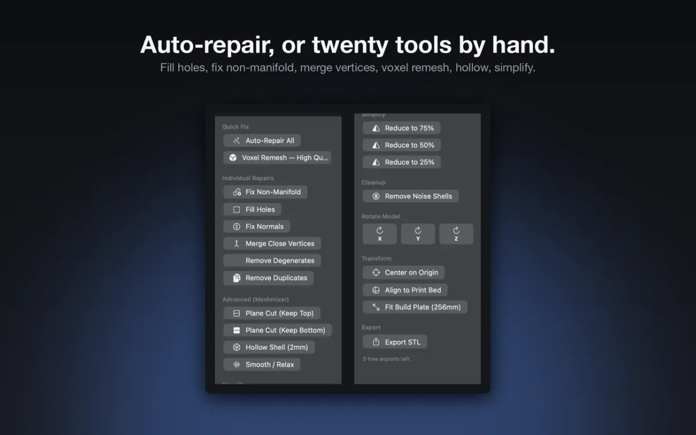
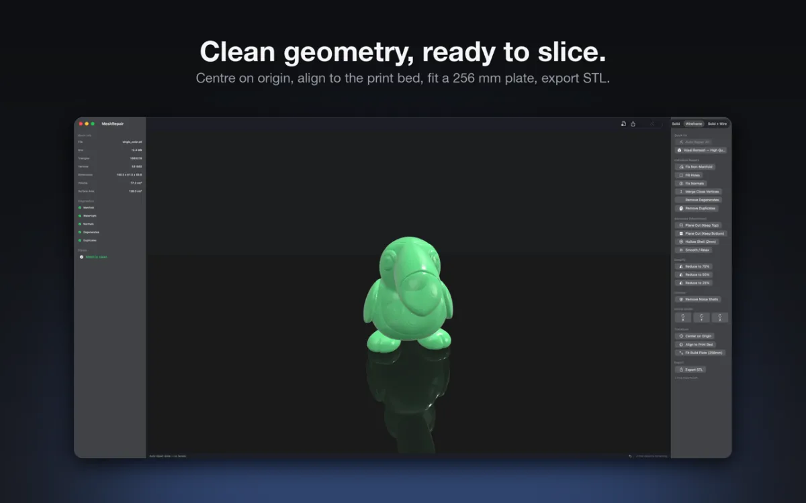

For Mac. Requires macOS 26.2 or later.
MeshRepair
Diagnose and repair STL and OBJ files for 3D printing on your Mac.
MeshRepair is a native Mac app that inspects STL and OBJ meshes for geometry errors and repairs them for 3D printing without cloud uploads. It is built for 3D printing hobbyists, makers, and designers who want to fix non-manifold edges, holes, and normals before slicing.
Free to download. Optional one-time Pro Unlock, $9.99.

What it does
Automatic mesh diagnostics
Drop any binary STL, ASCII STL, or OBJ file onto the window to inspect non-manifold edges, open boundary holes, flipped normals, degenerate triangles, and duplicate faces. The side panel also reports triangle and vertex counts, millimeter dimensions, volume in cm³, and surface area in cm².
Auto-Repair and Voxel Remesh
Run Auto-Repair to clean up degenerate and duplicate faces, weld close vertices, split non-manifold edges, fill holes, and orient normals outward in one step. For meshes with severe topology issues, Voxel Remesh converts the model into a 3D voxel grid and extracts a closed, watertight surface using Marching Cubes.
Individual repair and cleanup
Use dedicated tools to fix normals, close holes, merge vertices within 0.001 mm, remove floating noise shells, or smooth rough surfaces. Simplify dense meshes to 75%, 50%, or 25% of their original triangle count, slice models with Plane Cut, or create a 2 mm hollow shell to save print material.
Print bed orientation tools
Rotate meshes in 90-degree steps around the X, Y, or Z axis and center models on the origin. Align the largest flat face to the print bed or scale the model to fit your printer's build volume.
Interactive 3D viewport
Orbit, pan, and zoom in a SceneKit viewport with solid, wireframe, and combined solid-and-wireframe display modes. Non-manifold edges are drawn in red and open boundary holes appear in blue so you can locate defects directly on the model.
How it works
Open a 3D file
Drag an STL (binary or ASCII) or OBJ file into the MeshRepair window, or open it from the File menu.
Inspect the health report
Review the diagnostic checklist on the left panel and examine color-coded red and blue issue highlights in the 3D viewport.
Repair and orient
Click Auto-Repair for common geometry defects, run Voxel Remesh for complex topology issues, or apply individual editing and alignment tools.
Export binary STL
Click Export STL to save the repaired mesh to your Mac and open it in your 3D printing slicer.
Screenshots




Free and paid
Free to download. Optional one-time Pro Unlock, $9.99.
Free
- Import binary STL, ASCII STL, and OBJ files
- Unlimited mesh health diagnostics, statistics, and 3D viewport inspection
- Use all repair, remeshing, simplification, cutting, hollowing, and orientation tools
- 3 free binary STL exports
Pro Unlock, $9.99
- One-time $9.99 Pro Unlock with no subscription
- Unlimited binary STL exports
Get MeshRepair
For Mac. Requires macOS 26.2 or later. Questions are answered on the Help page, and the privacy policy explains what stays on your device.
Download on the Mac App Store